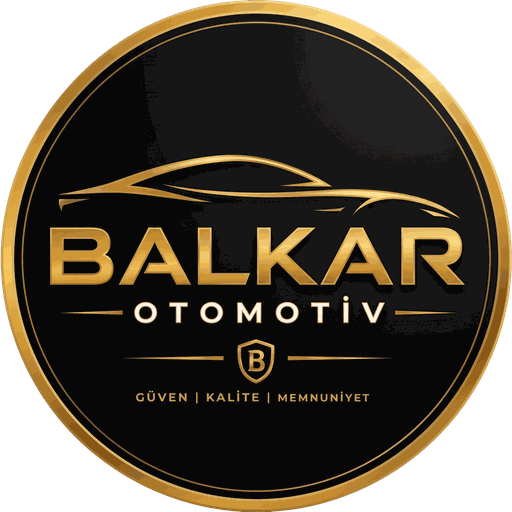

Vertrauen
Wir beschreiben jedes Auto so, wie es ist. Eine Prüfung, die nichts über unsere Angaben hinaus findet, ist die Grundlage unserer Arbeit.
Balkar Otomotiv ist ein Autohaus im Viertel Bayındır in Muratpaşa, Antalya, für An- und Verkauf sowie Tausch von Gebrauchtwagen, SUVs und Motorrädern. Wir arbeiten mit der Zulassung Nr. 0702737 des Handelsministeriums.
Beim Gebrauchtwagenkauf braucht man vor allem klare Informationen. Deshalb erklären wir die Geschichte jedes Fahrzeugs vorab, begrüßen unabhängige Prüfungen und beantworten Fragen geradeheraus.

Wir beschreiben jedes Auto so, wie es ist. Eine Prüfung, die nichts über unsere Angaben hinaus findet, ist die Grundlage unserer Arbeit.
Wir wählen unsere Fahrzeuge sorgfältig aus und bevorzugen Autos mit nachweisbarer Wartungshistorie.
Mit dem Verkauf endet die Beziehung nicht. Wir freuen uns, Sie beim nächsten Auto wiederzusehen.
Mitgründer
Mitgründer
Verkaufsberater
Aus unseren Google-Bewertungen · Aus dem Türkischen übersetzt.
Danke an Muhammed für seine Aufmerksamkeit und Ehrlichkeit beim Autokauf. Was er uns beim ersten Ansehen sagte, bestätigte die Prüfung – darüber hinaus fand sich nichts. So ehrliche und freundliche Händler gibt es kaum noch.
Mehmet K.
Ich wollte ein Auto kaufen und habe mich nach der Prüfung wegen einiger Punkte, bei denen ich empfindlich bin, dagegen entschieden. Der Kauf hätte klappen können, aber ich sagte ihnen, dass ich beim ersten Auto besonders genau bin. Sie haben meine Kosten übernommen und ich bin zufrieden gegangen.
Ahmet S.
Vielen Dank an Ramazan und seine Kollegen für ihre Mühe. Sie haben bei allem geholfen, keine Frage blieb offen. Balkar Otomotiv ist bei Kundenkontakt und Qualität die Nummer eins.
Hasan Eren E.
Danke für alles. Es fühlte sich wirklich an wie ein Kauf unter Freunden, nicht beim Händler. Bis zum nächsten Mal, alles Gute.
Güray Y.
Wir hatten einen sehr guten Autokauf. Besonders für Angestellte wie uns, die ihr Erspartes heutzutage ohne Zweifel anlegen wollen, klare Empfehlung.
Fatih
Wir waren wegen eines Chery Tiggo 7 Pro bei Balkar Otomotiv und waren begeistert, wie verlässlich und freundlich alles war. Bei der Prüfung war das Auto genau wie beschrieben. Besonderer Dank an Muhammed für seine Freundlichkeit und Zuverlässigkeit.
Banu K.
Wir waren mit dem Geschäft mit Muhammet sehr zufrieden. Nicht mehr und nicht weniger als er sagte – danke für die Fairness.
Erdi A.
Sehr gutes Geschäft mit Muhammet – wir haben getauscht. Danke, empfehlenswert.
Haktan Ö.
Wir wurden herzlich empfangen und alles lief reibungslos. Vielen Dank an Muhammet – Sie können beruhigt vorbeikommen.
Ömer Z.
Sie finden uns im Viertel Bayındır. Rufen Sie vorher an, dann steht Ihr Wunschfahrzeug bereit.